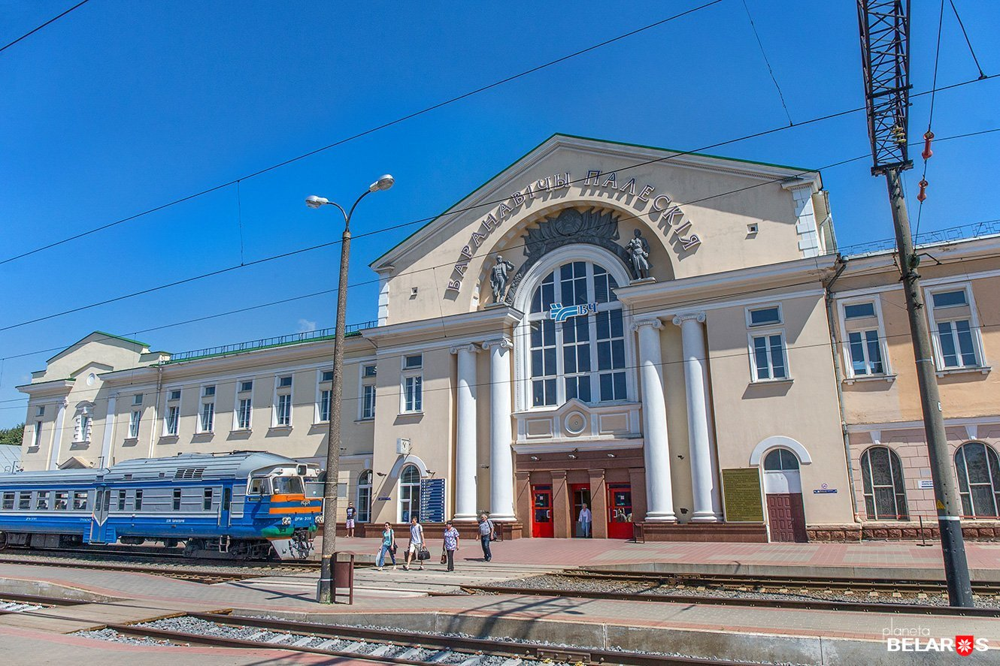
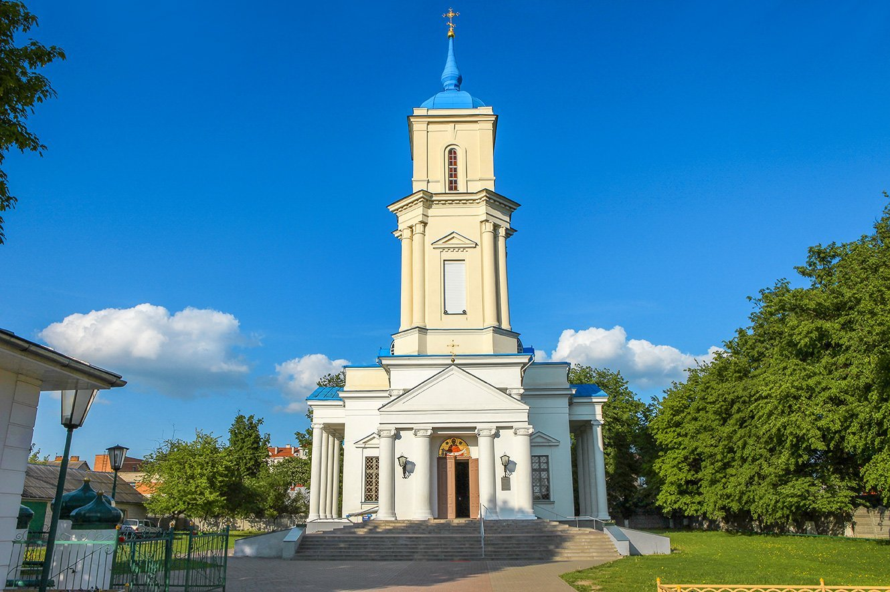
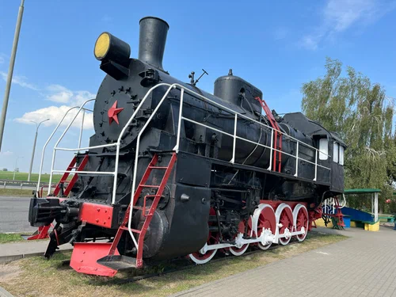
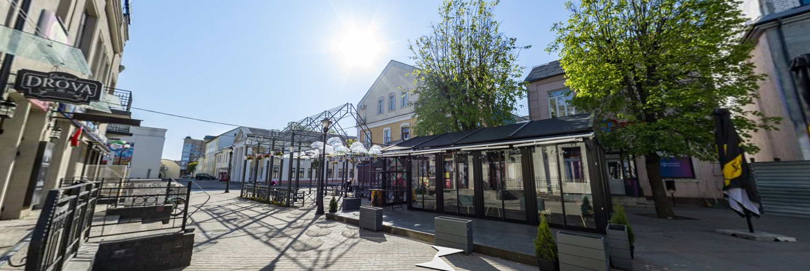
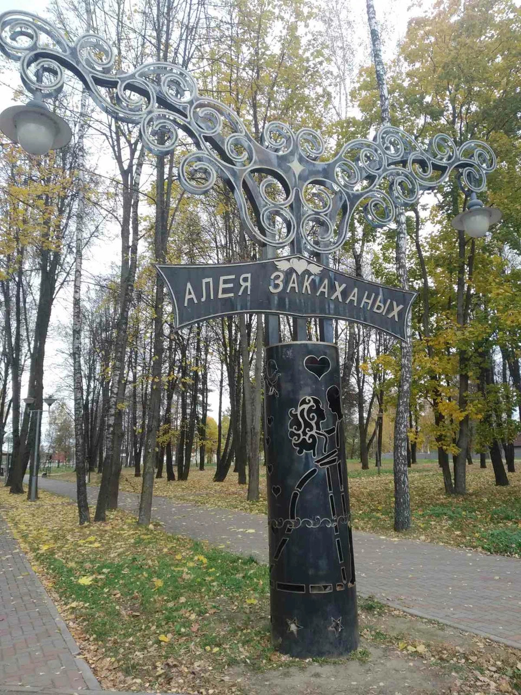
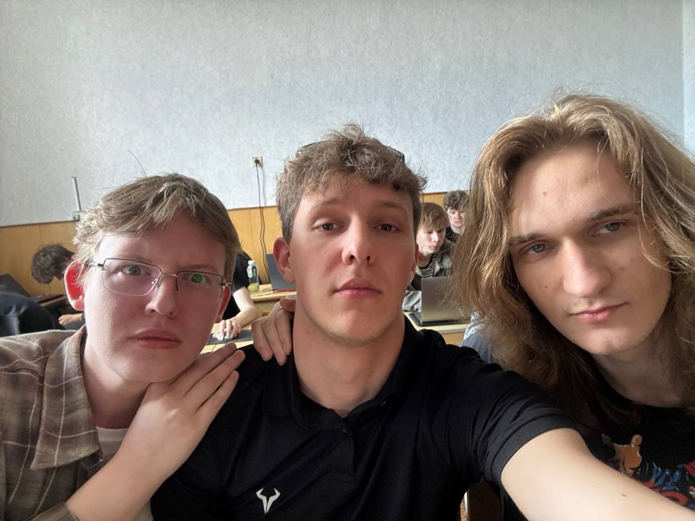

Барановичи глазами местных — архитектура, улицы и живые моменты города

Железнодорожный вокзал — символ города и его главная архитектурная доминанта

Свято-Покровский собор — духовный центр и украшение исторической части города

Паровоз-памятник — дань уважения железнодорожной истории «паровозной столицы»

Улица Советская — прогулочный бульвар с купеческой застройкой начала XX века

Парк имени Жилибока — любимое место отдыха горожан в любое время года

Автор сайта и еще 2
Парк Вдохновленные Победой — любимое место отдыха горожан в любое время года
Сборище одаренных